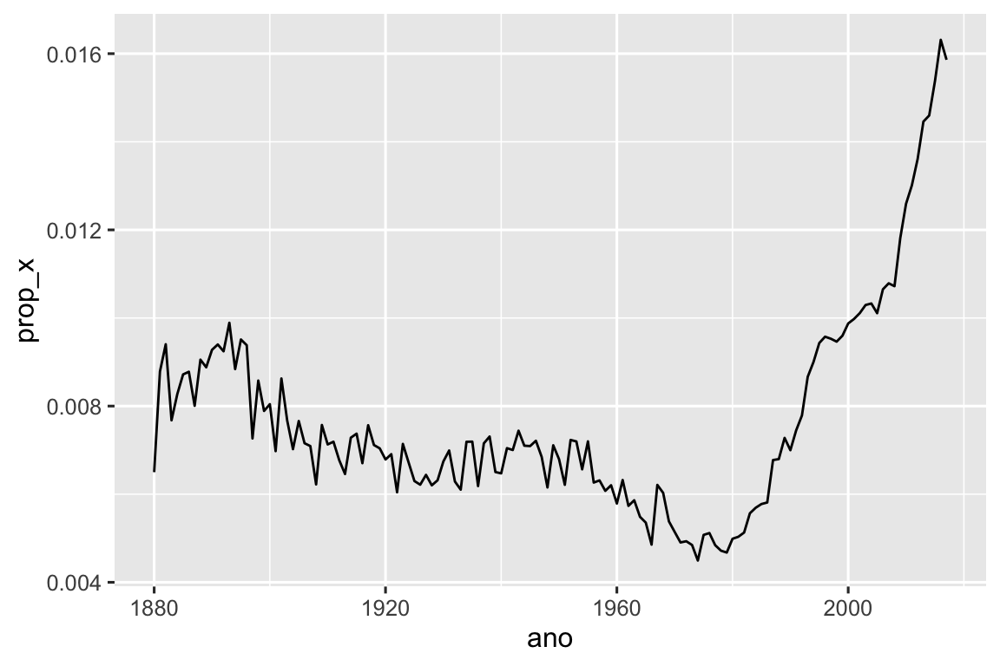

15 ✅ Expressões regulares
15.1 Introdução
No Capítulo 14, você aprendeu diversas funções úteis para trabalhar com strings. Este capítulo se concentrará em funções que usam expressões regulares, uma linguagem concisa e poderosa para descrever padrões (patterns) em uma cadeia de caracteres (strings). O termo “expressão regular” é um pouco longo, então a maioria das pessoas o abrevia como “regex”1 ou “regexp” (do inglês “regular expression”).
O capítulo começa com os conceitos básicos de expressões regulares e as funções do pacote stringr mais úteis para análise de dados. Em seguida, expandiremos seu conhecimento sobre padrões (patterns) e cobriremos sete novos tópicos importantes (escape, ancoragem, classes de caracteres, classes de abreviações, quantificadores, precedência de agrupamento). A seguir, falaremos sobre alguns dos outros tipos de padrões com os quais as funções do pacote stringr podem trabalhar e os vários “sinalizadores” (flags) que permitem ajustar a operação das expressões regulares. Terminaremos com uma pesquisa de outros lugares do tidyverse e no R base onde você pode usar expressões regulares.
15.1.1 Pré-requisitos
Neste capítulo, usaremos funções com expressão regular dos pacotes stringr e tidyr, ambos membros principais do tidyverse, bem como o conjunto de dados bebes do pacote dados.
Ao longo deste capítulo, usaremos uma combinação de exemplos muito simples para você entender a ideia geral, o conjunto de dados bebes e três vetores de caracteres do pacote stringr que estão em inglês:
-
fruitcontém nomes de 80 frutas. -
wordscontém 980 palavras comuns da lingua inglesa. -
sentencescontém 720 pequenas sentenças.
15.2 Padrões básicos
Usaremos a função str_view() para aprender como os padrões (patterns) regex funcionam. Usamos str_view() no capítulo anterior para entender melhor uma string vs. sua representação impressa, e agora, a usaremos com seu segundo argumento, uma expressão regular. Quando este argumento é fornecido, a str_view() irá mostrar apenas os elementos correspondentes (match) do vetor de string , colocando <> ao redor de cada correspondência, e, quando possível, enfatizando a correpondência na cor azul.
Os padrões mais simples consistem em letras e números que correspondem exatamente a esses caracteres:
str_view(fruit, "berry")
#> [6] │ bil<berry>
#> [7] │ black<berry>
#> [10] │ blue<berry>
#> [11] │ boysen<berry>
#> [19] │ cloud<berry>
#> [21] │ cran<berry>
#> ... and 8 moreLetras e números tem uma correspondência direta à seus respectivos caracteres e são chamados caracteres literais. A maioria dos caracteres de pontuação, como ., +, *, [, ] e ?, tem significados especiais2 e são chamados de metacaracteres. Por exemplo, . corresponde a qualquer caractere3, portanto "a." irá corresponder a qualquer string que contenha a letra “a” seguida por qualquer outro caractere :
Ou, podemos encontrar todas as frutas que contém um “a”, seguido por três letras, seguidas por um “e”:
str_view(fruit, "a...e")
#> [1] │ <apple>
#> [7] │ bl<ackbe>rry
#> [48] │ mand<arine>
#> [51] │ nect<arine>
#> [62] │ pine<apple>
#> [64] │ pomegr<anate>
#> ... and 2 moreQuantificadores controlam quantas vezes um padrão pode ser encontrado:
-
?torna um padrão opcional (e.x. corresponde a 0 ou 1 vez) -
+permite que o padrão se repita (e.x. corresponde ao menos uma vez) -
*permite que o padrão seja opcional ou se repita (e.x. corresponde a qualquer número de vezes, incluindo 0).
# ab? corresponde a "a", opcionalmente seguida por um "b".
str_view(c("a", "ab", "abb"), "ab?")
#> [1] │ <a>
#> [2] │ <ab>
#> [3] │ <ab>b
# ab+ corresponde a um "a", seguido por ao menos um "b".
str_view(c("a", "ab", "abb"), "ab+")
#> [2] │ <ab>
#> [3] │ <abb>
# ab* corresponde um "a", seguido por qualquer número de "b"s.
str_view(c("a", "ab", "abb"), "ab*")
#> [1] │ <a>
#> [2] │ <ab>
#> [3] │ <abb>Classes de caracteres são definidas por [] e permitem que você defina um conjunto de caracteres para serem identificados, e.x., [abcd] corresponde a “a”, “b”, “c” ou “d”. Você também pode inverter a correspondência com um ^: [^abcd] corresponde a qualquer coisa, exceto “a”, “b”, “c” ou “d”. Podemos usar esta ideia para encontrar palavras que contenham um “x” cercado por vogais, ou um “y” cercado por consoantes:
Você pode usar a alternância, |, para selecionar entre um ou mais padrões alternativos. Por exemplo, os padrões a seguir procuram por frutas contendo “apple”, “melon”, ou “nut”, ou uma vogal repetida.
str_view(fruit, "apple|melon|nut")
#> [1] │ <apple>
#> [13] │ canary <melon>
#> [20] │ coco<nut>
#> [52] │ <nut>
#> [62] │ pine<apple>
#> [72] │ rock <melon>
#> ... and 1 more
str_view(fruit, "aa|ee|ii|oo|uu")
#> [9] │ bl<oo>d orange
#> [33] │ g<oo>seberry
#> [47] │ lych<ee>
#> [66] │ purple mangost<ee>nExpressões regulares são bastante compactas e usam diversos caracteres de pontuação, portanto elas podem parecer difíceis de ler e entender no início. Não se preocupe; você as entenderá melhor com a prática, e padrões simples se tornarão mais naturais com o tempo. Vamos iniciar este processo praticando com algumas funções úteis do stringr.
15.3 Funções chave
Agora que você tem o básico das expressões regulares em sua caixa de ferramentas, vamos usá-las em algumas funções dos pacotes stringr e tidyr. Na seção a seguir, você aprenderá como detectar a presença ou ausência de correspondências (matches), como contar o número de correspondências, trocar uma correspondência por um texto fixo e extrair textos usando um padrão (pattern).
15.3.1 Detectando correspondências
str_detect() retorna uma vetor lógico que é TRUE se o padrão corresponde a um elemento do vetor de caracteres e FALSE se não corresponde:
str_detect(c("a", "b", "c"), "[aeiou]")
#> [1] TRUE FALSE FALSEUma vez que str_detect() retorna um vetor lógico de mesmo tamanho que o vetor inicial, ele combina muito bem com a função filter(). Por exemplo, este código encontra todos os nomes mais populares contendo um “x” minúsculo:
bebes |>
filter(str_detect(nome, "x")) |>
count(nome, wt = n, sort = TRUE)
#> # A tibble: 974 × 2
#> nome n
#> <chr> <int>
#> 1 Alexander 665492
#> 2 Alexis 399551
#> 3 Alex 278705
#> 4 Alexandra 232223
#> 5 Max 148787
#> 6 Alexa 123032
#> # ℹ 968 more rowsPodemos também usar astr_detect() com summarize() combinando-a com sum() ou mean(): sum(str_detect(x, padrao)) informa o número de observações correspondentes ao padrão e mean(str_detect(x, padrao)) informa a proporção da correspondência. Por exemplo, o código a seguir calcula e visualiza a proporção de nomes de bebês 4 que contém “x”, agrupados por ano. Parece que eles aumentaram em popularidade ultimamente!
bebes |>
group_by(ano) |>
summarize(prop_x = mean(str_detect(nome, "x"))) |>
ggplot(aes(x = ano, y = prop_x)) +
geom_line()
Existem duas funções que se relacionam muito com a str_detect(): str_subset() e str_which(). str_subset() retorna um vetor de caracteres contendo apenas as strings que correspondem ao padrão. str_which() retorna um vetor de inteiro informando a posição das strings que correspondem ao padrão.
15.3.2 Contando correspondências (matches)
O próximo passo em complexidade de str_detect() é str_count(): em vez de verdadeiro (true) ou falso (false), ele informa quantas correspondências (matches) existem em cada string.
Note que cada correspondência começa ao final da anterior, i.e. regex nunca se sobrepõem. Por exemplo, em "abababa", quantas vezes o padrão (pattern) "aba" é correspondido? A expressão regular diz que o padrão ocorre duas e não três vezes:
É comum usar str_count() com mutate(). Os exemplos a seguir usam str_count() com classes de caracteres para contar o número de vogais e consoantes em cada nome.
bebes |>
count(nome) |>
mutate(
vogais = str_count(nome, "[aeiou]"),
consoantes = str_count(nome, "[^aeiou]")
)
#> # A tibble: 97,310 × 4
#> nome n vogais consoantes
#> <chr> <int> <int> <int>
#> 1 Aaban 10 2 3
#> 2 Aabha 5 2 3
#> 3 Aabid 2 2 3
#> 4 Aabir 1 2 3
#> 5 Aabriella 5 4 5
#> 6 Aada 1 2 2
#> # ℹ 97,304 more rowsSe você observar bem, verá que há algo estranho em nossa contagem: “Aaban” contém três “a”s, mas nosso relatório sumarizado mostra apenas 2 vogais. Isto acontece porque as expressões regulares consideram a diferença entre letras maiúsculas e minúsculas (case sensitive)[^regexps-nt-1]. [^regexps-nt-1]: NT: Dizemos que a linguagem de programação é case sensitive quando existe a diferença entre letras maiúsculas (upper case) e minúsculas (lower case). Existem três formas de arrumar isto:
- Adicionar as vogais maiúsculas nas classes de caracteres:
str_count(nome, "[aeiouAEIOU]"). - Informar a expressão regular para ignorar esta diferença:
str_count(nome, regex("[aeiou]", ignore_case = TRUE)). Falaremos mais sobre isto na Seção 15.5.1. - Usar a
str_to_lower()para converter os nomes para letras minúsculas:str_count(str_to_lower(nome), "[aeiou]").
Esta variedade de abordagens é muito comum quando trabalhamos com strings — em geral, há várias formas de atingir seus objetivos, seja formando padrões mais complexos ou efetuando algum pré-processamento em sua string. Se você se encontrar preso com uma abordagem, em geral, pode ser melhor mudar de abordagem e atacar seu problema sob uma perspectiva diferente.
Neste caso, como estamos usando duas funções na variável nome, acredito ser mais fácil transformá-la antes:
bebes |>
count(nome) |>
mutate(
nome = str_to_lower(nome),
vogais = str_count(nome, "[aeiou]"),
consoantes = str_count(nome, "[^aeiou]")
)
#> # A tibble: 97,310 × 4
#> nome n vogais consoantes
#> <chr> <int> <int> <int>
#> 1 aaban 10 3 2
#> 2 aabha 5 3 2
#> 3 aabid 2 3 2
#> 4 aabir 1 3 2
#> 5 aabriella 5 5 4
#> 6 aada 1 3 1
#> # ℹ 97,304 more rows15.3.3 Trocando valores
Assim como detectar e contar correspondências, você também pode modificá-las com str_replace() e str_replace_all(). str_replace() troca a primeira correspondência e, como o nome sugere, a str_replace_all() troca todas as correspondências.
x <- c("apple", "pear", "banana")
str_replace_all(x, "[aeiou]", "-")
#> [1] "-ppl-" "p--r" "b-n-n-"str_remove() e str_remove_all() são funções atalho para str_replace(x, padrao, ""):
x <- c("apple", "pear", "banana")
str_remove_all(x, "[aeiou]")
#> [1] "ppl" "pr" "bnn"Estas funções combinam naturalmente com mutate() quando fazemos limpeza de dados e você geralmente as aplicará repetidamente para remover camadas de incosistência de formatação.
15.3.4 Extraindo variáveis
A última função que discutiremos utiliza expressões regulares para extrair dados de uma coluna e criar uma ou mais novas colunas: separate_wider_regex(). É uma função par da separate_wider_position() e separate_wider_delim() que você aprendeu na Seção 14.4.2. Estas funções estão no pacote tidyr porque operam em (colunas de) data frames, em vez de vetores individuais.
Vamos criar um conjunto simples de dados para mostrar como ela funciona. Aqui temos alguns dados derivados de dados::bebes onde temos nome, sexo biológico e idade de várias pessoas em um formato meio estranho5:
df <- tribble(
~str,
"<Sheryl>-F_34",
"<Kisha>-F_45",
"<Brandon>-M_33",
"<Sharon>-F_38",
"<Penny>-F_58",
"<Justin>-M_41",
"<Patricia>-F_84",
)Para extrair estes dados com separate_wider_regex(), precisamos apenas construir uma sequência de expressões regulares que correspondem a cada parte. Se quisermos que o conteúdo de cada parte apareça na saída, damos um nome:
df |>
separate_wider_regex(
str,
patterns = c(
"<",
nome = "[A-Za-z]+",
">-",
sexo_biologico = ".",
"_",
idade = "[0-9]+"
)
)
#> # A tibble: 7 × 3
#> nome sexo_biologico idade
#> <chr> <chr> <chr>
#> 1 Sheryl F 34
#> 2 Kisha F 45
#> 3 Brandon M 33
#> 4 Sharon F 38
#> 5 Penny F 58
#> 6 Justin M 41
#> # ℹ 1 more rowSe a correpondência falhar, você pode usar too_short = "debug" para entender o que deu errado, assim como na separate_wider_delim() e separate_wider_position().
15.3.5 Exercícios
Qual nome de bebê tem a menor quantidade de vogais? Qual nome tem a maior proporção de vogais? (Dica: qual o denominador?)
Troque todas as barras em
"a/b/c/d/e"por barras invertidas. O que acontece se você tentar desfazer esta mudança trocando as barras invertidas por barras? (Discutiremos este problema em breve.)Implemente uma versão simples da
str_to_lower()usandostr_replace_all().Crie uma expressão regular para correpondências de números telefônicos da forma que são comumente escritas em seu país.
15.4 Detalhes de padrões
Agora que você entende o básico da linguagem dos padrões e como usá-la com algumas funções do pacote stringr e tidyr, é hora de nos aprofundarmos mais nos detalhes. Primeiro, começaremos com escapadas (escaping), que permitem identificar metacaracteres que de outra forma seriam tratados de maneira especial. A seguir, você aprenderá sobre âncoras (anchors) que permitem identificar o início ou o fim da string. Em seguida, você aprenderá mais sobre classes de caracteres (character classes) e seus atalhos que permitem identificar qualquer caractere de um conjunto. A seguir, você aprenderá os detalhes finais dos quantificadores (quantifiers) que controlam quantas vezes um padrão pode ser identificado. Então, temos que cobrir o importante (mas complexo) tópico de precedência de operador (operator precedence) e parênteses. E terminaremos com alguns detalhes de agrupamento (grouping) de componentes de um padrão.
Os termos que usamos aqui são os nomes técnicos de cada componente. Nem sempre são os mais sugestivos em relação ao seu propósito, mas é muito útil conhecer os termos corretos se você desejar pesquisar mais detalhes posteriormente no Google.
15.4.1 Escapadas
Para identificar um . literal, você precisa escapar, o que informa a expressão regular para interpretar o metacaractere 6 literalmente. Assim como as strings, regexp usa a barra invertida para escapadas (escaping). Portanto, para identificar um ., você precisa da regexp \.. Infelizmente isto cria um problema. Nós usamos strings para representar expressões regulares, e \ é também usada como símbolo de escapadas nas strings. Portanto, para criar a expressão regular \. , precismos da string "\\.", como mostra os exemplos a seguir.
Neste livro, normalmente escreveremos expressões regulares sem aspas, como \.. Se precisarmos enfatizar o que você realmente digitará, colocaremos aspas e adicionaremos escapadas extras, como "\\.". Para criar essa expressão regular, você precisa usar uma string, que também precisa escapar de \. Isso significa que para corresponder a um \ literal você precisa escrever "\\\\" — você precisa de quatro barras invertidas para corresponder a uma!
Alternativamente, você pode achar mais fácil usar strings brutas (raw) que você emprendeu na Seção 14.2.2. Isso permite que você evite uma camada de escape:
str_view(x, r"{\\}")
#> [1] │ a<\>bSe você está tentando identificar um ., $, |, *, +, ?, {, }, (, ) literal, há uma alternativa para não usar a escapada com barra invertida: você pode usar uma classe de caractere: [.], [$], [|], … todas correspondem aos valores literais.
15.4.2 Âncoras
Por padrão, as expressões regulares corresponderão a qualquer parte de uma string. Se você quiser identificar no início ou no final, você precisa ancorar a expressão regular usando ^ para encontrar no início ou $ para encontrar no final:
É tentador pensar que $ deve corresponder ao início de uma string, porque é assim que escrevemos valores monetários, mas não é isso que as expressões regulares desejam.
Para forçar uma expressão regular a corresponder apenas à string completa, ancore-a com ^ e $:
Você também pode combinar o limite entre as palavras (ou seja, o início ou o fim de uma palavra) com \b. Isso pode ser particularmente útil ao usar a ferramenta localizar e substituir do RStudio. Por exemplo, se quiser encontrar todos os usos de sum(), você pode procurar por \bsum\b para evitar a correspondência de summarize, summary, rowsum e assim por diante:
Quando usadas sozinhas, as âncoras produzirão uma correspondência de largura-zero (zero-width):
Isso ajuda você a entender o que acontece quando você substitui uma âncora independente:
str_replace_all("abc", c("$", "^", "\\b"), "--")
#> [1] "abc--" "--abc" "--abc--"15.4.3 Classes de caracteres
Uma classe de caracteres (character class), ou um conjunto de caracteres, permite que você faça a correspondência de qualquer caractere deste conjunto. Como discutido acima, você pode construir seus próprios conjuntos com [], onde [abc] correponde a “a”, “b” ou “c” e [^abc] corresponde a qualquer caractere exceto “a”, “b” ou “c”. Além do ^ existem outros dois caracteres com significados especiais quando estão dentro de []:
-
-define um intervalo (range), e.x.,[a-z]corresponde a qualquer letra minúscula e[0-9]a qualquer número. -
\caracteres especiais de escapadas, então[\^\-\]]corresponde^,-ou].
Aqui estão alguns exemplos:
x <- "abcd ABCD 12345 -!@#%."
str_view(x, "[abc]+")
#> [1] │ <abc>d ABCD 12345 -!@#%.
str_view(x, "[a-z]+")
#> [1] │ <abcd> ABCD 12345 -!@#%.
str_view(x, "[^a-z0-9]+")
#> [1] │ abcd< ABCD >12345< -!@#%.>
# Você precisa de uma escapada para caracteres especiais
# dentro de []
str_view("a-b-c", "[a-c]")
#> [1] │ <a>-<b>-<c>
str_view("a-b-c", "[a\\-c]")
#> [1] │ <a><->b<-><c>Algumas classes de caracteres são tão comuns que possuem atalhos próprios. Você já viu ., que corresponde a qualquer caractere exceto o de nova linha. Existem três outras classes que são particularmente úteis7:
-
\dcorresponde a qualquer digito;\Dcorresponde a qualquer coisa que não seja um digito. -
\scorresponde a qualquer espaço em branco (e.x., espaço, tab, nova linha);\Scorresponde a qualquer coisa que não seja um espaço em branco. -
\wcorresponde a qualquer caractere de “palavra” (word) , e.x. letras e números;\Wcorresponde a qualquer caractere de “não-palavra” (non-word).
O código a seguir demonstra os seis atalhos com a seleção de letras, números e caracteres de pontuação.
x <- "abcd ABCD 12345 -!@#%."
str_view(x, "\\d+")
#> [1] │ abcd ABCD <12345> -!@#%.
str_view(x, "\\D+")
#> [1] │ <abcd ABCD >12345< -!@#%.>
str_view(x, "\\s+")
#> [1] │ abcd< >ABCD< >12345< >-!@#%.
str_view(x, "\\S+")
#> [1] │ <abcd> <ABCD> <12345> <-!@#%.>
str_view(x, "\\w+")
#> [1] │ <abcd> <ABCD> <12345> -!@#%.
str_view(x, "\\W+")
#> [1] │ abcd< >ABCD< >12345< -!@#%.>15.4.4 Quantificadores
Quantificadores (Quantifies) controlam quantas vezes um padrão é correspondido. Na Seção 15.2 você aprendeu sobre o ? (0 ou 1 correspondência), + (1 ou mais correspondências) e * (0 ou mais correspondências). Por exemplo, colou?r irá corresponder à escrita em inglês estadunidense (color) e britânico (colour), \d+ irá corresponder a um ou mais digitos, e \s? irá opcionalmente corresponder a um único espaço em branco. Você também pode especificar o número exato de correspondências com {}:
-
{n}corresponde exatamente n vezes. -
{n,}corresponde ao menos n vezes. -
{n,m}corresponde entre n e m vezes.
15.4.5 Precedência de operadores e parênteses
A o que ab+ corresponde? Corresponde a um “a” seguido por um ou mais “b”s, ou corresponde a “ab” repetidos qualquer número de vezes? A o que corresponde ^a|b$? Corresponde a uma string completa começando com “a” ou uma string completa terminando com “b”, ou a uma string que começa com “a” ou uma string que termina com “b”?
As respostas para estas perguntas são determinadas pela precedência de operadores, similar às regras de ordem de prioridade das operações aritméticas que você deve ter aprendido na escola. Você sabe que a + b * c é equivalente a a + (b * c) e não (a + b) * c pois * tem uma prioridade mais alta de precedência e + tem uma precedência mais baixa: você calcula o * antes do +.
Da mesma forma, expressões regulares têm suas próprias regras de precedência: quantificadores têm precedência alta e alternância têm precedência baixa, o que significa que ab+ é equivalente a a(b+), e ^a|b$ é equivalente a (^a)|(b$). Assim como na álgebra, você pode usar parênteses para substituir a ordem normal. Mas, diferentemente da álgebra, é improvável que você se lembre das regras de precedência para expressões regulares, então sinta-se à vontade para usar parênteses livremente.
15.4.6 Agrupando e capturando
Além de substituir a precedência do operador, os parênteses têm outro efeito importante: eles criam grupos de captura que permitem usar subcomponentes da correspondência.
A primeira maneira de usar um grupo de captura é fazer referência a ele dentro de uma correspondência com referência anterior: \1 refere-se à correspondência contida no primeiro parênteses, \2 no segundo parênteses, e assim sucessivamente. Por exemplo, o padrão a seguir encontra todas as frutas que possuem um par de letras repetido:
str_view(fruit, "(..)\\1")
#> [4] │ b<anan>a
#> [20] │ <coco>nut
#> [22] │ <cucu>mber
#> [41] │ <juju>be
#> [56] │ <papa>ya
#> [73] │ s<alal> berryE este encontra todas as palavras que começam e terminam com o mesmo par de letras:
str_view(words, "^(..).*\\1$")
#> [152] │ <church>
#> [217] │ <decide>
#> [617] │ <photograph>
#> [699] │ <require>
#> [739] │ <sense>Você também pode usar referências anteriores (back references) em str_replace(). Por exemplo, este código muda a ordem da segunda e terceira palavras em sentences:
sentences |>
str_replace("(\\w+) (\\w+) (\\w+)", "\\1 \\3 \\2") |>
str_view()
#> [1] │ The canoe birch slid on the smooth planks.
#> [2] │ Glue sheet the to the dark blue background.
#> [3] │ It's to easy tell the depth of a well.
#> [4] │ These a days chicken leg is a rare dish.
#> [5] │ Rice often is served in round bowls.
#> [6] │ The of juice lemons makes fine punch.
#> ... and 714 moreSe você deseja extrair as correspondências de cada grupo, você pode usar str_match(). Mas str_match() retorna uma matriz, então não é particularmente fácil trabalhar com ela8:
You could convert to a tibble and name the columns:
sentences |>
str_match("the (\\w+) (\\w+)") |>
as_tibble(.name_repair = "minimal") |>
set_names("correspondencia", "palavra1", "palavra2")
#> # A tibble: 720 × 3
#> correspondencia palavra1 palavra2
#> <chr> <chr> <chr>
#> 1 the smooth planks smooth planks
#> 2 the sheet to sheet to
#> 3 the depth of depth of
#> 4 <NA> <NA> <NA>
#> 5 <NA> <NA> <NA>
#> 6 <NA> <NA> <NA>
#> # ℹ 714 more rowsMas então você basicamente recriou sua própria versão de separate_wider_regex(). Na verdade, nos bastidores, separate_wider_regex() converte seu vetor de padrões em um único regex que usa agrupamento para capturar os componentes nomeados.
Ocasionalmente, você desejará usar parênteses sem criar grupos correspondentes. Você pode criar um grupo sem captura com (?:).
15.4.7 Exercícios
Como você faria para identificar a string literal
"'\? E"$^$"?Explique por que cada um desses padrões não correspondem a
\:"\","\\","\\\".-
Dado o conjunto de palavras comuns em
stringr::words, crie expressões regulares para encontrar todas as palavras que:- Comecem com “y”.
- Não comecem com um “y”.
- Terminem com “x”.
- Possuem exatamente três letras. (Não trapaceie usando a
str_length()!) - Possuem sete letras ou mais.
- Contém um par consoante-vogal.
- Contém ao menos um par consoante-vogal em sequência.
- É formada apenas por pares repetidos de consoantes-vogais.
Crie 11 expressões regulares que correspondem a ortografias estadunidenses e britânicas para cada uma das seguintes palavras: airplane/aeroplane, aluminum/aluminium, analog/analogue, ass/arse, center/centre, defense/defence, donut/doughnut, gray/grey, modeling/modelling, skeptic/sceptic, summarize/summarise. Tente e crie a menor expressão regular possível!
Troque a primeira e última letra em
words. Quais dessas strings ainda sãopalavras?-
Descreva em palavras ao que correspondem as expressões abaixo: (leia com atenção para ver se cada parte corresponde a uma expressão regular ou a uma string que define uma expressão regular.)
^.*$"\\{.+\\}"\d{4}-\d{2}-\d{2}"\\\\{4}"\..\..\..(.)\1\1"(..)\\1"
Resolva a palavra-cruzada de regex para iniciantes em https://regexcrossword.com/challenges/beginner.
15.5 Controle de padrões
É possível exercer controle extra sobre os detalhes da correspondência usando um objeto padrão em vez de apenas uma string. Isto permite que você controle os chamados sinalizadores (flags) regex e combine vários tipos de strings fixas, conforme descrito abaixo.
15.5.1 Sinalizadores regex
Existem várias configurações que podem ser usadas para controlar os detalhes do regexp. Essas configurações costumam ser chamadas de sinalizadores (flags) em outras linguagens de programação. No pacote stringr, você pode usá-los agrupando o padrão em uma chamada para regex(). O sinalizador mais útil é provavelmente ignore_case = TRUE porque permite que os caracteres correspondam às suas formas maiúsculas ou minúsculas:
Se você trabalha muito com strings multilinhas (ou seja, strings que contêm \n), dotall e multiline também podem ser úteis:
-
dotall = TRUEfaz com que o.corresponda a qualquer coisa, incluindo o\n: -
multiline = TRUEfaz o^e o$corresponder ao início e fim de cada linha ao invés do início e fim de cada string completa:
Finalmente, se você estiver escrevendo uma expressão regular complicada e estiver preocupado em não entendê-la no futuro, você pode tentar comments = TRUE. Ele ajusta a linguagem padrão para ignorar espaços e novas linhas, bem como tudo depois de #. Isso permite que você use comentários e espaços em branco para tornar expressões regulares complexas mais compreensíveis9, como no exemplo a seguir:
telefone <- regex(
r"(
\(? # opcional abertura de parêntese
(\d{3}) # codigo de área
[)\-]? # opcional fechamento de parêntese ou traço
\ ? # espaço opcional
(\d{3}) # outros três números
[\ -]? # opcional espaço ou traço
(\d{4}) # quatro outros números
)",
comments = TRUE
)
str_extract(c("514-791-8141", "(123) 456 7890", "123456"), telefone)
#> [1] "514-791-8141" "(123) 456 7890" NASe você estiver usando comentários e quiser identificar um espaço, nova linha ou #, você precisará escapar usando a \.
15.5.2 Correspondências fixas
Você pode optar por cancelar as regras de expressão regular usando fixed():
fixed() também te dá a habilidade de ignorar formas maiúsculas e minúsculas:
Se você estiver trabalhando com textos que não estão em inglês, você provavelmente irá querer usar a coll() ao invés da fixed(), uma vez que ela implementa todas as regras de capitalização (capitalization) usadas pela localização (locale) que você especificou. Veja a Seção 14.6 para maiores detalhes sobre localização.
15.6 Prática
Para colocar essas ideias em prática, resolveremos a seguir alguns problemas semi-autênticos. Discutiremos três técnicas gerais:
- verificar seu trabalho criando controles simples positivos e negativos
- combinar expressões regulares com álgebra booleana
- criar padrões complexos usando manipulação de strings
15.6.1 Verifique seu trabalho
Primeiro, vamos encontrar todas as frases que começam com “The”. Usar a âncora ^ por si só não é suficiente:
str_view(sentences, "^The")
#> [1] │ <The> birch canoe slid on the smooth planks.
#> [4] │ <The>se days a chicken leg is a rare dish.
#> [6] │ <The> juice of lemons makes fine punch.
#> [7] │ <The> box was thrown beside the parked truck.
#> [8] │ <The> hogs were fed chopped corn and garbage.
#> [11] │ <The> boy was there when the sun rose.
#> ... and 271 morePorque esse padrão também corresponde a frases que começam com palavras como They ou These. Precisamos ter certeza de que o “e” é a última letra da palavra, o que podemos fazer adicionando um limite (boundary) de palavra:
str_view(sentences, "^The\\b")
#> [1] │ <The> birch canoe slid on the smooth planks.
#> [6] │ <The> juice of lemons makes fine punch.
#> [7] │ <The> box was thrown beside the parked truck.
#> [8] │ <The> hogs were fed chopped corn and garbage.
#> [11] │ <The> boy was there when the sun rose.
#> [13] │ <The> source of the huge river is the clear spring.
#> ... and 250 moreQue tal encontrar todas as frases que começam com um pronome em inglês?
str_view(sentences, "^She|He|It|They\\b")
#> [3] │ <It>'s easy to tell the depth of a well.
#> [15] │ <He>lp the woman get back to her feet.
#> [27] │ <He>r purse was full of useless trash.
#> [29] │ <It> snowed, rained, and hailed the same morning.
#> [63] │ <He> ran half way to the hardware store.
#> [90] │ <He> lay prone and hardly moved a limb.
#> ... and 57 moreUma rápida inspeção dos resultados mostra que estamos obtendo algumas correspondências falsas. Isso porque esquecemos de usar parênteses:
str_view(sentences, "^(She|He|It|They)\\b")
#> [3] │ <It>'s easy to tell the depth of a well.
#> [29] │ <It> snowed, rained, and hailed the same morning.
#> [63] │ <He> ran half way to the hardware store.
#> [90] │ <He> lay prone and hardly moved a limb.
#> [116] │ <He> ordered peach pie with ice cream.
#> [127] │ <It> caught its hind paw in a rusty trap.
#> ... and 51 moreVocê deve estar se perguntando como identificar tal erro se ele não ocorreu nas primeiras correspondências. Uma boa técnica é criar algumas correspondências positivas e negativas e usá-las para testar se o seu padrão funciona conforme o esperado:
pos <- c("Ele é jovem", "Elas se divertiram")
neg <- c("Eleitores não compareceram na data correta", "Hadley nos disse 'É um ótimo dia!'")
padrao <- "^(Eu|Tu|Ele|Ela|Nós|Vós|Eles|Elas)\\b"
str_detect(pos, padrao)
#> [1] TRUE TRUE
str_detect(neg, padrao)
#> [1] FALSE FALSENormalmente é muito mais fácil encontrar bons exemplos positivos do que negativos, porque leva um tempo até que você seja bom o suficiente com expressões regulares para prever onde estão seus pontos fracos. No entanto, eles ainda são úteis: à medida que você trabalha no problema, você pode acumular lentamente uma coleção de seus erros, garantindo que nunca cometerá o mesmo erro duas vezes.
15.6.2 Operações booleanas
Imagine que queremos encontrar palavras que contenham apenas consoantes. Uma técnica é criar uma classe de caracteres que contenha todas as letras, exceto as vogais ([^aeiou]), então permitir que corresponda a qualquer número de letras ([^aeiou]+) e, em seguida, forçá-la a corresponder a string inteira ancorando no início e no final (^[^aeiou]+$):
str_view(words, "^[^aeiou]+$")
#> [123] │ <by>
#> [249] │ <dry>
#> [328] │ <fly>
#> [538] │ <mrs>
#> [895] │ <try>
#> [952] │ <why>Mas você pode tornar esse problema um pouco mais fácil invertendo-o. Em vez de procurar palavras que contenham apenas consoantes, poderíamos procurar palavras que não contenham vogais:
str_view(words[!str_detect(words, "[aeiou]")])
#> [1] │ by
#> [2] │ dry
#> [3] │ fly
#> [4] │ mrs
#> [5] │ try
#> [6] │ whyEsta é uma técnica útil sempre que você estiver lidando com combinações lógicas, especialmente aquelas que envolvem “e” ou “não”. Por exemplo, imagine que você deseja encontrar todas as palavras que contenham “a” e “b”. Não há nenhum operador “e” embutido nas expressões regulares, então temos que resolver isso procurando todas as palavras que contenham um “a” seguido por um “b” ou um “b” seguido por um “a”:
str_view(words, "a.*b|b.*a")
#> [2] │ <ab>le
#> [3] │ <ab>out
#> [4] │ <ab>solute
#> [62] │ <availab>le
#> [66] │ <ba>by
#> [67] │ <ba>ck
#> ... and 24 moreÉ mais simples combinar os resultados de duas chamadas para str_detect():
words[str_detect(words, "a") & str_detect(words, "b")]
#> [1] "able" "about" "absolute" "available" "baby" "back"
#> [7] "bad" "bag" "balance" "ball" "bank" "bar"
#> [13] "base" "basis" "bear" "beat" "beauty" "because"
#> [19] "black" "board" "boat" "break" "brilliant" "britain"
#> [25] "debate" "husband" "labour" "maybe" "probable" "table"E se quiséssemos ver se existe uma palavra que contém todas as vogais? Se fizéssemos isso com padrões precisaríamos gerar 5! (120) padrões diferentes:
words[str_detect(words, "a.*e.*i.*o.*u")]
# ...
words[str_detect(words, "u.*o.*i.*e.*a")]É muito mais simples combinar cinco chamadas para str_detect():
words[
str_detect(words, "a") &
str_detect(words, "e") &
str_detect(words, "i") &
str_detect(words, "o") &
str_detect(words, "u")
]
#> character(0)Em geral, se você ficar preso tentando criar um único regexp que resolva seu problema, dê um passo para trás e pense se você poderia dividir o problema em partes menores, resolvendo cada desafio antes de passar para o próximo.
15.6.3 Criando um padrão com código
E se quiséssemos encontrar todas as sentences que mencionam uma cor? A ideia básica é simples: apenas combinamos alternância com limites de palavras (boundary).
str_view(sentences, "\\b(red|green|blue)\\b")
#> [2] │ Glue the sheet to the dark <blue> background.
#> [26] │ Two <blue> fish swam in the tank.
#> [92] │ A wisp of cloud hung in the <blue> air.
#> [148] │ The spot on the blotter was made by <green> ink.
#> [160] │ The sofa cushion is <red> and of light weight.
#> [174] │ The sky that morning was clear and bright <blue>.
#> ... and 20 moreMas à medida que o número de cores aumenta, rapidamente se tornaria entediante construir esse padrão manualmente. Não seria legal se pudéssemos armazenar as cores em um vetor?
rgb <- c("red", "green", "blue")Bem, nós podemos! Precisaríamos apenas criar o padrão a partir do vetor usando str_c() e str_flatten():
str_c("\\b(", str_flatten(rgb, "|"), ")\\b")
#> [1] "\\b(red|green|blue)\\b"Poderíamos tornar esse padrão mais abrangente se tivéssemos uma boa lista de cores. Um lugar onde poderíamos começar é a lista de cores integradas que R usa para gerar gráficos:
Mas vamos primeiro eliminar as variantes numeradas:
cores <- colors()
cores <- cores[!str_detect(cores, "\\d")]
str_view(cores)
#> [1] │ white
#> [2] │ aliceblue
#> [3] │ antiquewhite
#> [4] │ aquamarine
#> [5] │ azure
#> [6] │ beige
#> ... and 137 moreEntão podemos transformar isso em um padrão gigante. Não mostraremos o padrão aqui porque é enorme, mas você pode ver como ele funciona:
padrao <- str_c("\\b(", str_flatten(cores, "|"), ")\\b")
str_view(sentences, padrao)
#> [2] │ Glue the sheet to the dark <blue> background.
#> [12] │ A rod is used to catch <pink> <salmon>.
#> [26] │ Two <blue> fish swam in the tank.
#> [66] │ Cars and busses stalled in <snow> drifts.
#> [92] │ A wisp of cloud hung in the <blue> air.
#> [112] │ Leaves turn <brown> and <yellow> in the fall.
#> ... and 57 moreNeste exemplo, cores contém apenas números e letras, então você não precisa se preocupar com metacaracteres. Mas, em geral, sempre que você criar padrões a partir de strings existentes, é aconselhável executá-los em str_escape() para garantir que eles correspondam literalmente.
15.6.4 Exercícios
-
Para cada um dos desafios a seguir, tente resolvê-los usando uma única expressão regular e uma combinação de múltiplas chamadas à função
str_detect().- Encontre todas as palavras em
wordsque começam ou terminam comx. - Encontre todas as palavras em
wordsque começam com vogal e terminam com consoante. - Existe alguma palavra em
wordsque contenha pelo menos uma de cada vogal diferente?
- Encontre todas as palavras em
Construa padrões para encontrar evidências a favor e contra a regra: “i” antes de “e” exceto depois de “c”.
colors()contém vários modificadores de cores como “lightgray” (cinza claro) e “darkblue” (azul escuro). Como você poderia identificar automaticamente esses modificadores (light, dark) ? (Pense em como você pode detectar e remover as cores modificadas).Crie uma expressão regular que encontre qualquer conjunto de dados do R. Você pode obter uma lista desses conjuntos de dados através do uso especial da função
data():data(package = "datasets")$results[, "Item"]. Observe que vários conjuntos de dados antigos são vetores individuais; eles contêm o nome do “data frame” agrupado entre parênteses, então você precisará retirá-los.
15.7 Expressões regulares em outros lugares
Assim como nas funções stringr e tidyr, existem muitos outros lugares no R onde você pode usar expressões regulares. As seções a seguir descrevem algumas outras funções úteis no tidyverse e no R base.
15.7.1 tidyverse
Existem três outros lugares particularmente úteis onde você pode querer usar expressões regulares
matches(padrao)selecionará todas as variáveis cujo nome corresponda ao padrão fornecido. É uma função “tidyselect” que você pode usar em qualquer lugar em qualquer função tidyverse que selecione variáveis (por exemplo,select(),rename_with()eacross()).O argumento
names_patternda funçãopivot_longer()recebe um vetor de expressão regular, assim como naseparate_wider_regex(). É útil ao extrair dados de nomes de variáveis com uma estrutura complexa.O argumento
delimnaseparate_longer_delim()e naseparate_wider_delim()geralmente corresponde a uma string fixa, mas você pode usarregex()para fazê-lo corresponder a um padrão. Isso é útil, por exemplo, se você deseja corresponder uma vírgula que é opcionalmente seguida por um espaço, ou seja,regex(", ?").
15.7.2 R base
apropos(padrao) pesquisa todos os objetos disponíveis no ambiente global que correspondem ao padrão fornecido. Isto é útil se você não consegue lembrar o nome de uma função:
apropos("replace")
#> [1] "%+replace%" "replace" "replace_na"
#> [4] "setReplaceMethod" "str_replace" "str_replace_all"
#> [7] "str_replace_na" "theme_replace"list.files(caminho, padrao) lista todos os arquivos em caminho que correspondem a uma expressão regular padrao. Por exemplo, você pode encontrar todos os arquivos R Markdown no diretório atual com:
head(list.files(pattern = "\\.Rmd$"))
#> character(0)É importante notar que a linguagem de padrão usada pelo R base é ligeiramente diferente daquela usada pelo stringr. Isso ocorre porque stringr é construído sobre o pacote stringi, que por sua vez é construído sobre o mecanismo ICU, enquanto as funções base R usam o mecanismo TRE ou o mecanismo PCRE, dependendo se você configurou ou não perl = TRUE. Felizmente, os princípios básicos das expressões regulares estão tão bem estabelecidos que você encontrará poucas variações ao trabalhar com os padrões que aprenderá neste livro. Você só precisa estar ciente da diferença quando começar a depender de recursos avançados, como intervalos complexos de caracteres Unicode ou recursos especiais que usam a sintaxe (?…).
15.8 Resumo
Com cada caractere de pontuação potencialmente sobrecarregado de significado, as expressões regulares são uma das linguagens mais compactas que existem. Elas são definitivamente confusas no início, mas à medida que você treina seus olhos para lê-las e seu cérebro para entendê-las, você desbloqueia uma habilidade poderosa que pode ser usada em R e em muitos outros lugares.
Neste capítulo, você iniciou sua jornada para se tornar um mestre em expressões regulares aprendendo as funções stringr mais úteis e os componentes mais importantes da linguagem de expressões regulares. E ainda há muitos recursos para aprender ainda mais.
Um bom lugar para começar é na vignette("regular-expressions", package = "stringr"): ela documenta o conjunto completo de sintaxe suportada pelo pacote stringr. Outra referência útil é https://www.regular-expressions.info/. Não é específico do R, mas você pode usá-lo para aprender sobre os recursos mais avançados das expressões regulares e como elas funcionam.
Também é bom saber que stringr é implementado tendo o pacote stringi do Marek Gagolewski como base. Se você está lutando para encontrar uma função que faça o que você precisa em stringr, não tenha medo de procurar no pacote stringi. Você achará que stringi é muito fácil de aprender porque segue muitas das mesmas convenções que o stringr.
No próximo capítulo, falaremos sobre uma estrutura de dados intimamente relacionada às strings: os fatores. Fatores são usados para representar dados categóricos em R, ou seja, dados com um conjunto fixo e conhecido de valores possíveis identificados por um vetor de strings.
Você pode pronunciá-lo com um g-seco (reg-x) ou um g-suave (rej-x).↩︎
Você aprenderá como escapar (escape) destes significados especiais na Seção 15.4.1.↩︎
Bem, qualquer caractere exceto
\n(nova linha).↩︎Isto nos dá a proporção de nomes que contém um “x”; se você quiser a proporção de bebês com um nome contendo um x, você deve usar uma média ponderada.↩︎
Gostaríamos de poder garantir que você nunca veria algo tão estranho na vida real, mas infelizmente, ao longo de sua carreira, é provável que você veja coisas muito mais estranhas!↩︎
A lista completa de metacaracteres é
.^$\|*+?{}[]()↩︎Lembre-se, para criar uma expressão regular contendo
\dou\s, você precisará escapar a\da string, então você digitará"\\d"ou"\\s".↩︎Principalmente porque nunca discutimos sobre matrizes neste livro!↩︎
comments = TRUEé particularmente eficaz quando usado com uma string bruta (raw), como usamos aqui.↩︎